|
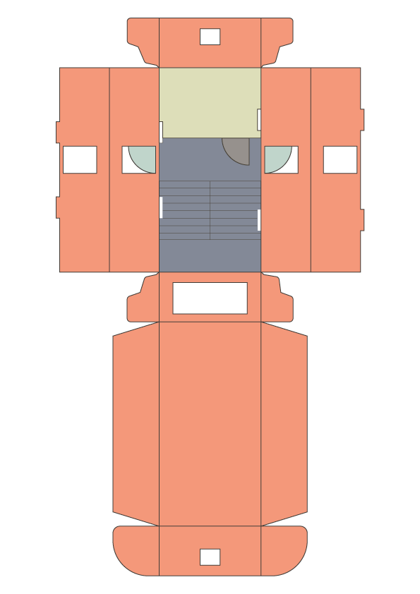 언어를 좀 더 세분화하고 싶다. ‘횡단’하는 공간이 아닌(실제로 옥상의 문은 서로를 마주보고 있어 나는 종종 횡단하는 기분을 느끼기도 한다.) ‘종단’하는 공간. 종단함으로써 보이는 풍경은 위계와 어떻게 다를까? 아니면... 우리는 위계의 의미를 오해하고 있는 것 아닐까? ‘종단하다’와 ‘위치’의 관계가 궁금하다. 직선적인(수직과 사선 모두를 포함하여) 상하운동과, 곡선적으로 구불구불한 상하운동의 차이가 있을 수 있을까? 곡선은 반복되는 레이어의 실패의 연속이다. 44.8 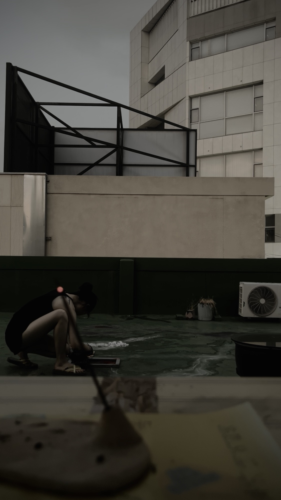 오후의 뜨거운 기온을 피해 저녁을 먹고나서 밀린 작업을 시작했다. 틀 안에 왁스를 부을 차례였다. 전번의 실패(하지만 실패는 아닌)를 반복하지 않을 생각으로 바닥에 넓게 펼쳐둔 왁스는 몇날며칠 이어진 강렬한 햇빛으로 녹아 흩어진지 오래이다. 기름진 바닥만이 남았으므로, 한껏 기대를 품고 지열이 조금 내려간 저녁 나는 여전히 더운 옥상으로 올라가 조급하게 왁스를 녹이고 전번과 동일한 색소를 고르고, 녹진한 성을 그리고 왁스를 조심스럽게 붓는다. 43.8 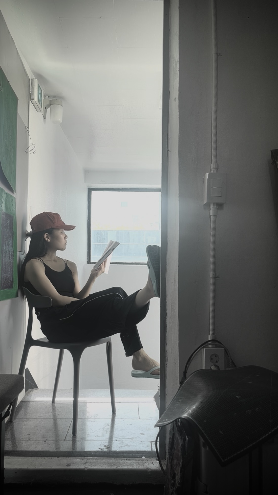 마지막 자유시간을 즐기려고 했으나 그다지 즐기지 못했다. 땀범벅이 되어 내려가 바로 샤워를 함. 42.8 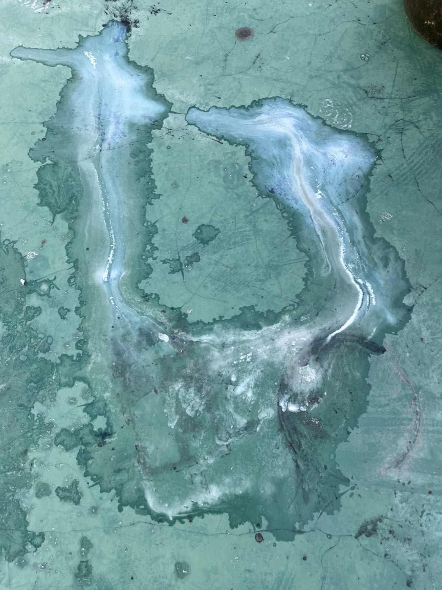 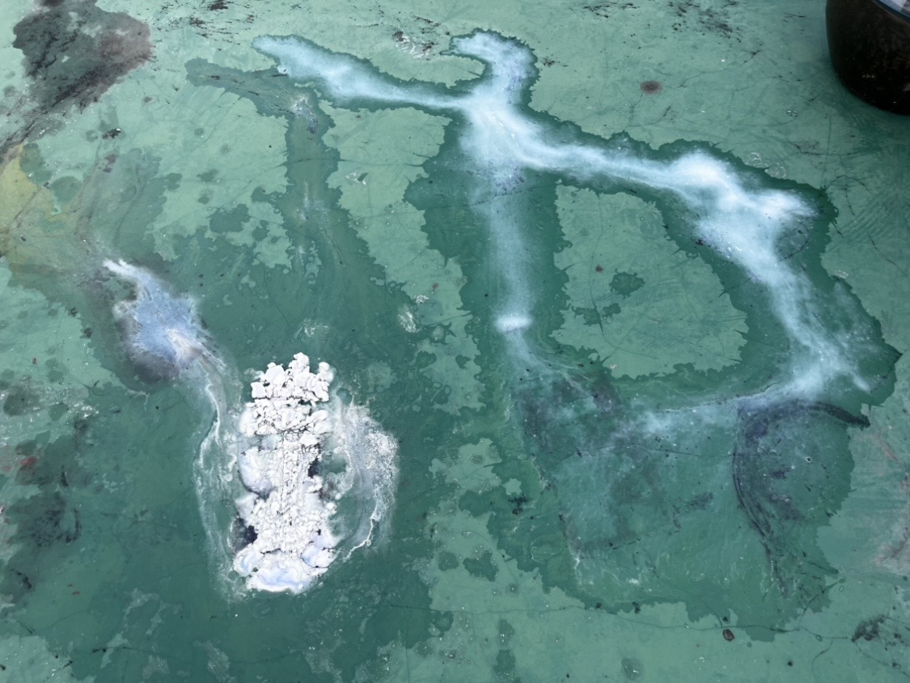 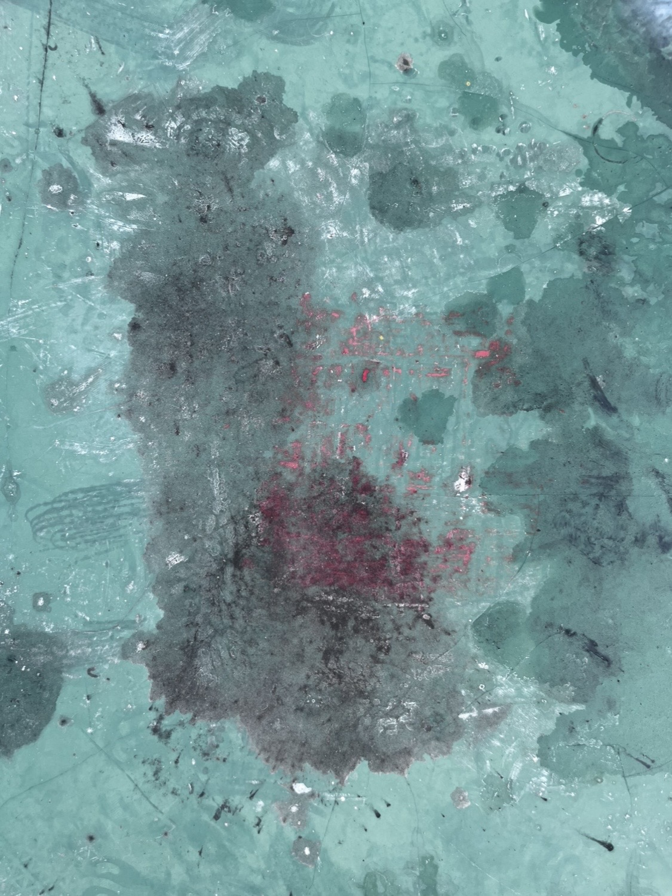 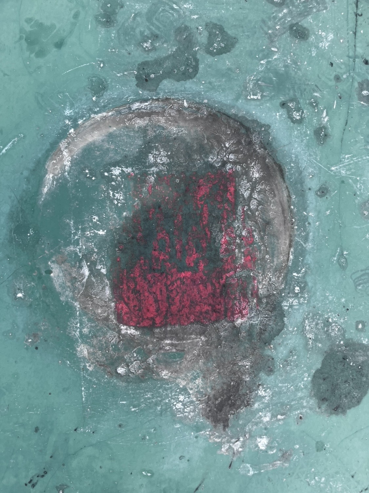 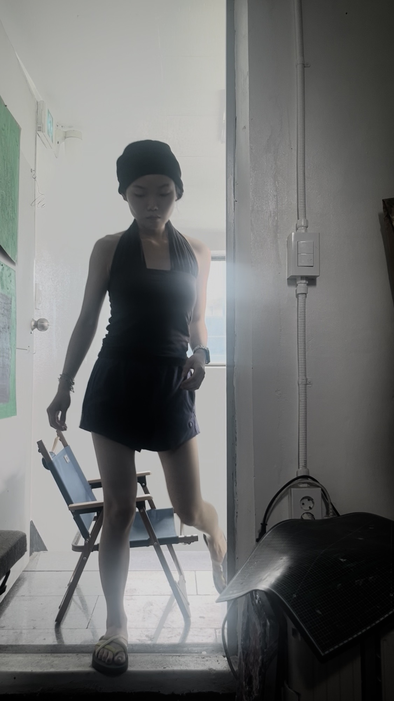 방학이 시작되고 나는 한 번도 일지를 쓰지 않았다. 하지만 그 일지가 여기저기에 퍼져있으므로 그런대로 나쁘지 않다. 나는 그 다른 공간에 방학 동안의 나, D가 없는 내가 그리고 쉬고 있는 내가 어떤 일지와 글을 쓸 수 있는지 고민해야 한다는 ‘의무’에 대해 이야기했다. 이 모든 것은 자기만족이고, 나 자신을 배려하는 행동일 수밖에 없는 것도. <컬트> 41.7 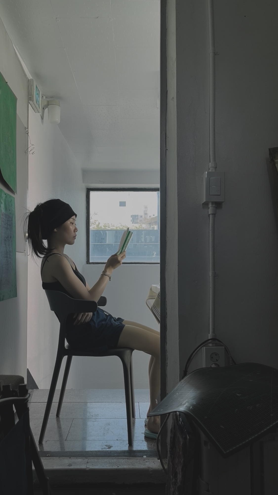 책을 읽다가 땀범벅이 되어 내려감. 40.7 ☐학년 ☐반 ☐번. 이것을 제대로 쓰기까지 한 학기가 걸렸다. 불현듯 불안의 이유를 알 것 같은 느낌이 들었다. 누군가 나를 해할 것 같은 감각. 머릿속은 흑 또는 백이 된다. 내가 부정당할 것 같은 감각, 거부받을 것임에 틀림없다는 불안. 여자아이들은 유독 연보라색을 좋아한다. 반소매도 연보라, 바지도 연보라, 치마도 연보라, 가방도 연보라색이다. 유행하는 색일까? 진료에 가서 나는 바로 불안의 원인에 대한 나의 불분명한 추측들을 나열했다. 말몰레기(제주도 방언. 벙어리. 비하표현은 아니라고 한다.) 나는 오늘따라 봇물 터지듯 이야기들을 두서없이 꺼냈다. 너무 익어버려 상해버린 옛 기억과 설익어 신맛뿐이 느껴지지 않는 최근의 기억까지. 불안의 원인을 찾기 위한 노력이었을까? 꿈 이야기를 특히 많이 했다. 39.7 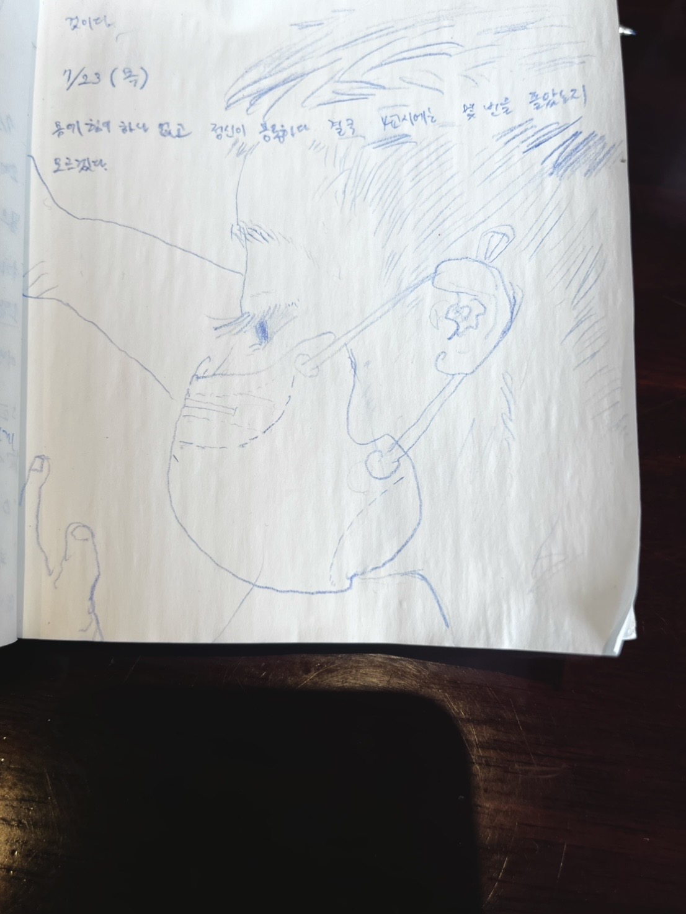 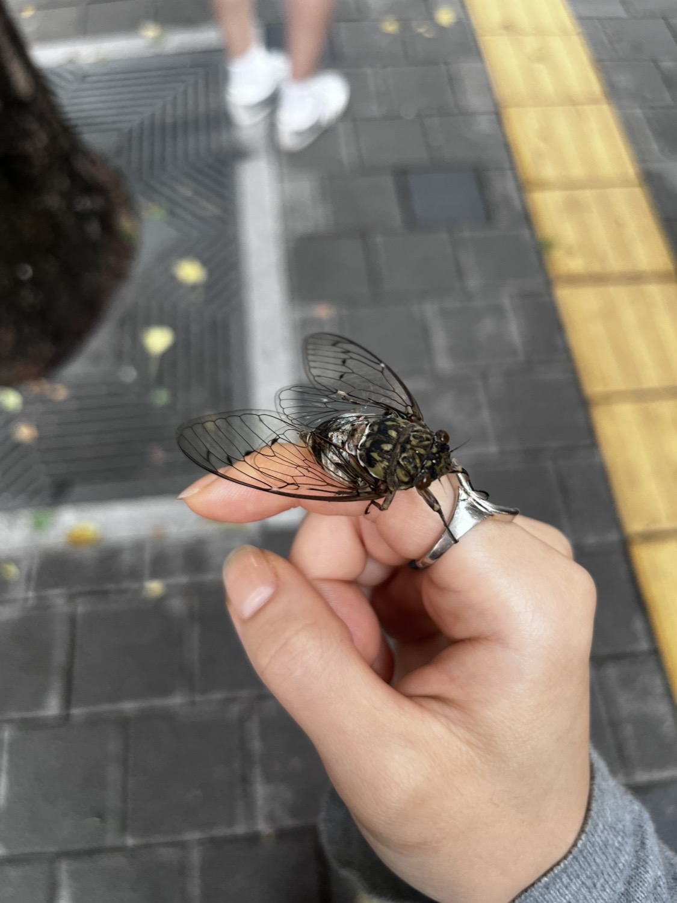 몸에 힘이 하나 없고 정신이 몽롱하다. 결국 4교시에는 몇 번을 졸았는지. 38.7 스스로 사물함 속 파일 내용을 확인하려는 D. 한 번 내 눈치를 쓱. 우와-! 하며 읽는다. 누군가에게 보여주고 왔나? 누구에게 다가갔는지 보지 못했다. 화가 난다. 나는 화가 난다. 나는 화가 나지 않았다. 나는 나의 피곤함이 화가 되지 않는 사람이다. 이히 빈 뮈데. 이히 빈 뮈데. 이제 이것은 나의 주문이 되었나? 나는 화난 것이 아니다. 나는 피곤하다. 나는 피곤하다. 나는 화나지 않았다. 나는 피곤하다. 나는 나의 피곤함이 화가 되지 않는 사람이다. 지금 나의 무반응이 화 때문인지 고집의 결과를 보여주기 위함인지 나조차 구분할 수 없다. 확실한 것은 도와주고 싶은 마음을 억누르고 있단 것이다. 37.7 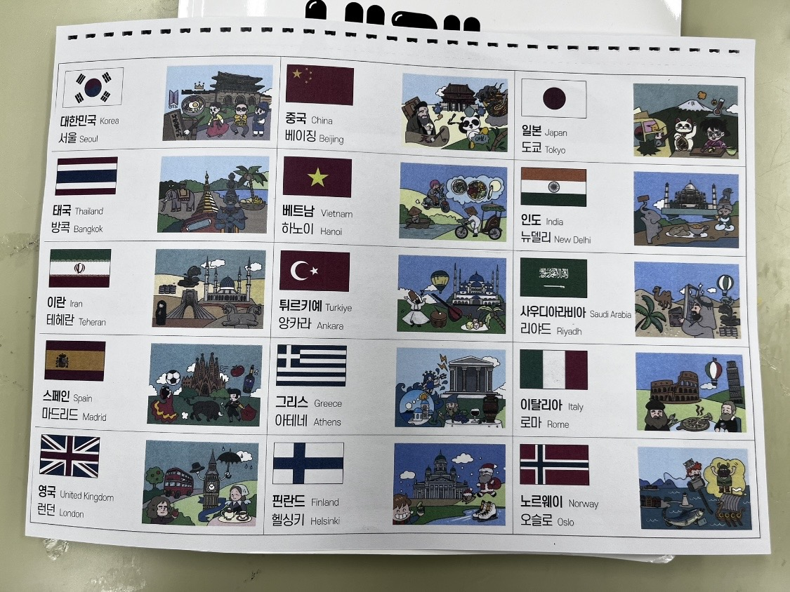 아직도 화요일인가? 36.7 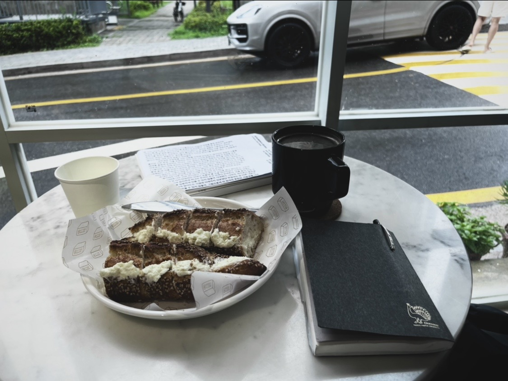 D의 옷을 3중으로 싸서 가방에 넣으셨다 한다. 혹여나 냄새가 나 D가 곤란을 겪을까봐. D는 간혹 손을 들어 답을 말하거나 오답을 말했고 멍하니 화면에 계속 주의를 집중했다. 이번 주(방학식이 있기에 1학기의 마지막 주)의 월요일은 원래 예외적으로 5교시지만 두 선생님은 나에게 먼저 자율성을 주셨다. 나는 당연히 5교시까지 남아있을 예정이었으나 D에게 그 자율성을 넘겨보기로 한다. “ D야, 선생님 같이 있을까, 아니면 혼자 해볼래?” “혼자.” 뜻밖의 대답에 당황, 충격, 실소. 4교시가 끝난 후 나는 마지막으로 물어본다. “D야, 선생님 있을까, 갈까?” “가요.” 두번째 대답도 일편단심. 어딘가 비장해보이는 태도. 한편으로 얼마나 잘할까 기대가 된다. 선생님께 양해를 구하고 뒷걸음질로 24색 색연필을 가지러 가는 D의 등을 지켜보며 교실 문과 정문을 차례대로 벗어나, 나는 지금 빵만 사려고 들어간 카페 창가에 눌러앉아 비를 즐긴다. 35.7 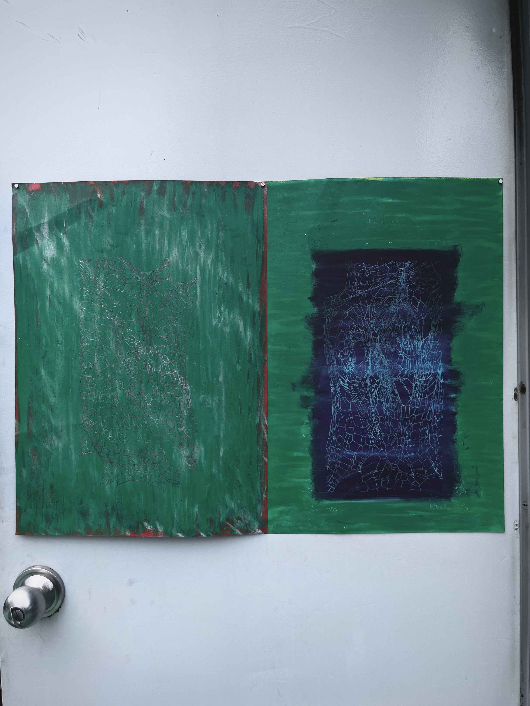 친구를 사랑한다면 친구에게서 진짜를 찾으려 하지마. 34.7 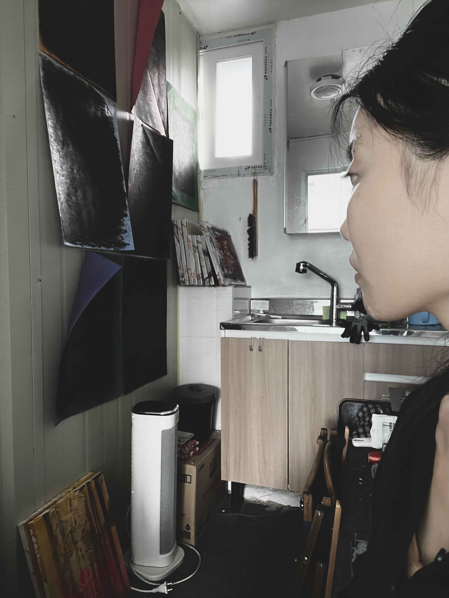 나눔장터. 통합반의 수학시간 활동이지만 D도 했으면 좋겠다는 선생님의 의견에 따라 D도 함께 하게 되었다. D는 신난 모양이다. 여러가지 판매할 물건들을 가져왔다. 무척이나 신나고 신나고 신난 만큼 실망도 하지만 그런 감정을 잠시뿐이다. 그리고 그에 따른 나의 감정은 내일 혹은 그 이후에 찾아올 것이다. 내 영혼은 특히나 느리기 때문에. 겐다마. 내 영혼은 느리기 때문에. 내가 배려하고 있는 것은 나 자신이다. 나는 나밖에는 생각할 수 없다... 무조건 무중력. ohne_seelen 계정은 “영혼 없는”이란 뜻의 독일어이다. 나는 영혼을 버린 것인지, 벌한 것인지, 버림으로써 나 외의 것을 생각하고 싶었던 것인지 잘 모르겠다. 아직 모르겠다. 언젠가 알게 될까? 33.7 오늘은 왠지 개운하다. 진료와 J와의 만남은 행운의 세트처럼 나에게 영향을 끼친다. 변비약을 먹은 탓에 설사를 심하게 하는 중이다. 다음부터는 한 알만 먹는 것이 좋을 것 같다. 퇴근 후 H의 작업실에 갈 예정이다. 출간준비중인 책에 대해 이것저것 의견을 들어보고 싶다. 갑자기 불현듯 불안하다. 미약한 패닉상태. 머리의 온도가 급변하는 것을 느낀다. 티니클링. 올라(Hola)! 32.7 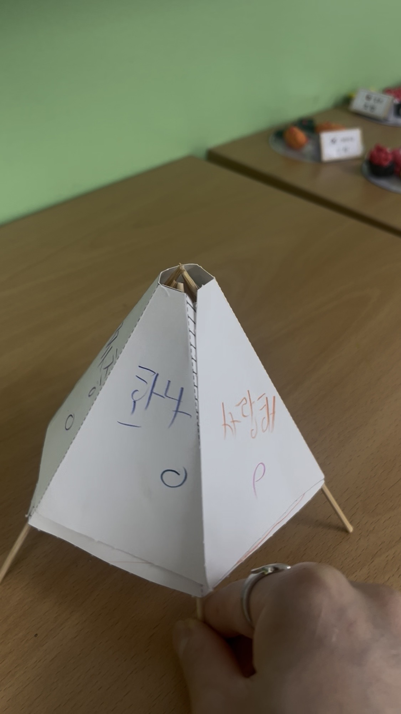 목격자들, 혹은 가해자 무리들을 가만히 응시했다. 무리들 중 한명이 “저 아니에요,”라고 말한다. 자주 나와 마주치고 인사를 하는 모든 부분이 동글동글한 아이이다. 나는 화를 참고 있다. “내가 뭐라고 했니?”라고 답하고는 D가 마지막으로 나왔을 때 손을 씻으라 한 후 화장실에서의 일을 물어보았다. ...... 너무 힘들고 불안하다... 어제와 같이 불안이 엄습한다. 비슷한 양상으로 후에 있을 기쁜 일을 생각하면 불안은 그대로 있거나 오히려 그 정도가 가중된다. 몸에 힘을 주는 것이 버겁다 머릿속은 냉기를 느낀다. 문득, 그래 문득... 지속성에 대해 생각해본다. 하나의 선이 있다면 내가 어디쯤 있는 건지 생각한다. 그러다 곧 부질없다는 생각을 한다. ...그만 쓰는 게 좋을 것 같다. (...) 31.7 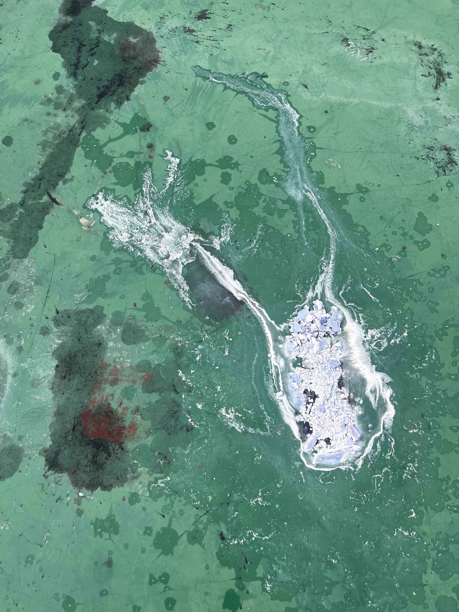 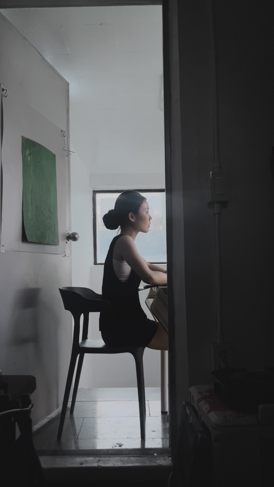 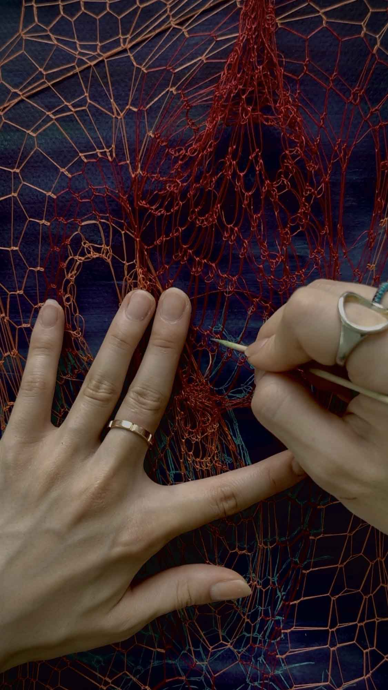 K는 생각나는 대상부터 쓴 것처럼 보인다. 하지만 문장을(장치의 실제기능을 상상하는 것을) 끝맺는 것에 어려움을 보이며 망설이는 듯해 보인다. 힌트를 준다. 그 이후 빠르게 자신의 바람과 상상력을 덧붙여 문장을 끝까지 쓰나 싶었다. 진도가 다음 페이지로 넘어갔음에도 계속 앞 페이지를 넘겨 보며 문장을 맘에 들 때까지 고쳐쓴다. 완벽주의가 발동했다. 열심히 하는 모습이 보기 좋았으며 진도는 문제없이 금방 따라잡는다. 조용히 문제를 풀어보고, 조용히 답안을 보며 맞춰보는 K. 바로 앞 내용을 복습하기 시작한다. K의 고민하는 시간은 유독 고요하다. 핏기없는 얼굴 때문일까? 미미한 표정 때문일까? D의 사물함 속 파일 안에 비밀스러운 것을 숨겨두었다. 나의 행동을 모방하는 것을 보고, 할거리, 놀거리, 볼거리를 주고 싶었다. D는 자신의 고집을 인정했다. 주말 동안 무슨 일이 있었니? 장마의 가운데에 있다. 왁스는 지용성이지만 장맛비에 반응한다. 수분으로 축축한 바닥과 유분으로 반질반질한 바닥이 만난다. 나는 이 바닥에 또다른 성분이 펼쳐져 있을 것이라 추측한다. 소의 쓸개즙과 같은, 그런 것이. 다음 성으로 가야한다. 30.7 친구를 만난다면 나는 할 이야기가 많은 사람이 되었다. 그것이 어떤 방향일지 아직은 알지 못하지만. 나는 이야기해야만 한다. 이야기 꽃을 피워야 한다. 29.7 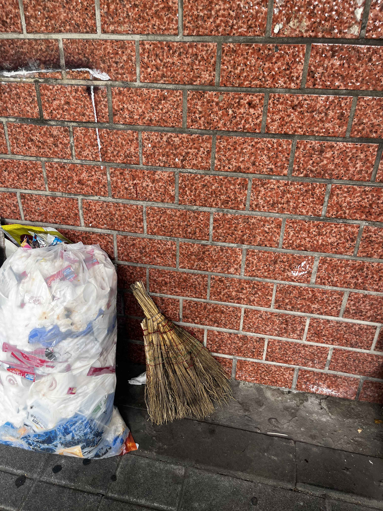 오늘. 쉬어도 되겠지만 밀린 작업일지와 영상 사진들을 정리하고 업로드하기 위해 카페에 왔다. 물론 책작업도... 어저면 그냥 카페에 오고 싶었던 것인지도 모른다. text1............fish800...........text1 min-width: 510px display: flex fish400............fish300 28.7 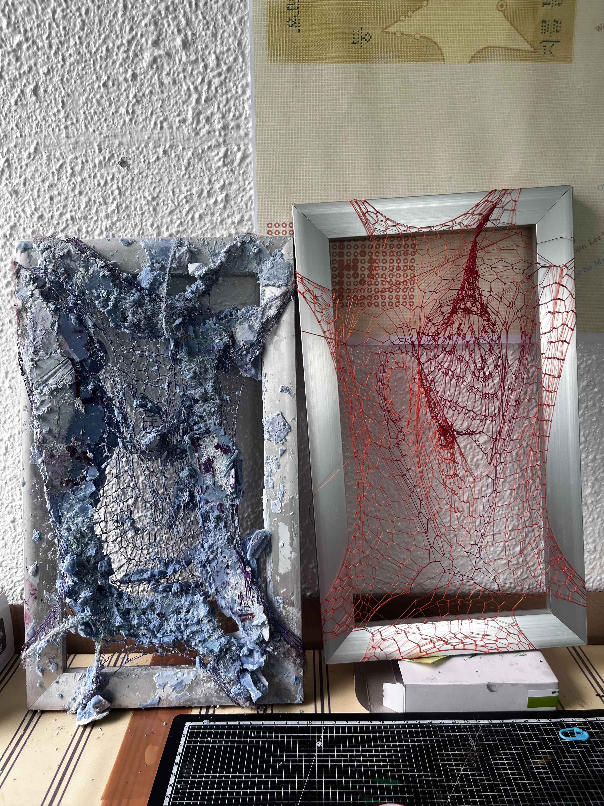 오늘은 정신이 반쯤 빠진 것 같다. 이유에 대해 생각해보면 아침을 일찍부터 느긋하게 보낸 것이 화근이다. 무려 4시간이나 아침시간을 알차게 사용했으니까. 그 탓에 긴장을 놓았던 것이다. 담배를 2개비나 핀 것도, 감상적인 글을 충동적으로 올린 것도 원인일테지. 청승과 주책이 나의 정체성의 일부라지만 그래도 오늘은 너무했다. 물통, 수첩, 책이 든 보조가방을 통째로 두고 오다니, 나는 한 번도 그런 적이 없었다. 시내로 나가기 전 애써 무거운 가방을 매고 온 것이 아깝지만 다시 집에 들렸다 나와야겠다. (중략)...한 선생님으로부터 D와 비슷한 행동의 일화를 들었다. 잠시 들리려고 했던 나의 계획은 틀어졌고 누운 자리 그대로 2시간을 꼼짝할 수 없었다. 피에스타. 27.7 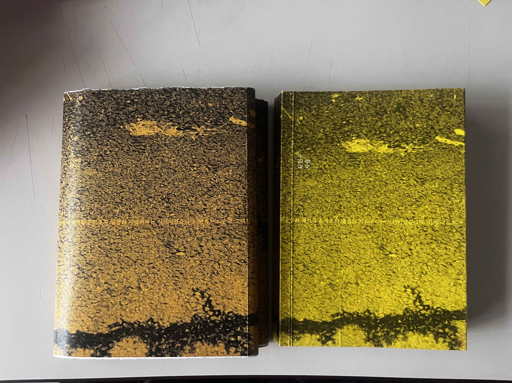 장마가 시작된다고 한다. 오늘 하루가 끝나면 어제의 것까지 합해서 이틀의 감정표를 작성해야 한다. 어제 책 작업을 시작했다. 표지는 질감이 더 느껴지는 진한 노란색(선택지가 없었다)으로 변경함과 동시에 변형된 중철을 고려하여 너비를 넓혔다. 결과적으로 아동용의 두툼하고 부드러운 느낌의 외형이지만 반며너 날카로운 느낌의 표지 사진을 병치해 다중적인 인상을 보이고 싶다. 급식실. 아이들이 (내 앞에 Y가 앉아있었을 것이다) 나의 수첩에서 하얀색 종이 를 목격했다. “그거 D가 쓴 거예요?” 아이들이 흥미로운 눈길로 일제히 시선을 돌린다. D의 처방전을 D가 보여줌에 따라 유심히 바라본다. D는 아는지 모르는지 의기양양하게 보여달라는 아이들의 모든 요청에 응한다. 심지어 이런 것(D에 관한)에 관심이 없을 것 같던 M도 보여달라 나선다. 그중 Y의 옆에 앉은 C가 “그거 가지시려는 거예요?”라고 미소 지으며 물어본다. “응.” 작업. 틀 뜨개망을 모두 마무리하고 소이 왁스 20kg(이미 테스트를 완료한)를 주문했다. 완성은 했으나 하는 내내 나는 갑자기 드러나 햇빛에 끔뻑끔뻑 눈이 감기곤 했다. 이번에 성은 세워질까? 무너질까? 그 모든 것은 아니면...모두 동일하게 누워있는 도상일까? 26.7 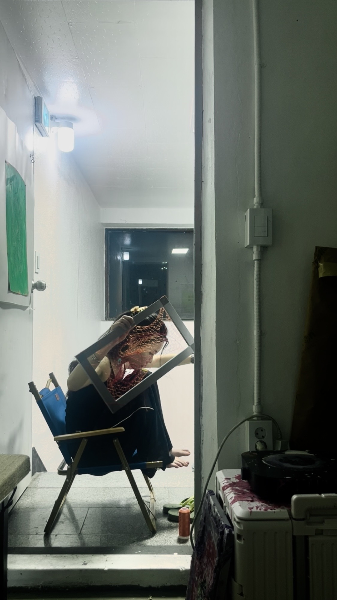 오늘 나는 화가 많이 나있다. (나는 피곤하다.) 아마 많은 이유가 있고 그중에는 수면부족과 과한 흡연도 한 몫 하는 것 같다. 오늘 D는 운동장을 가로지르고 교실 내에서 계속 뛰었다. (중략) ...약기운에 정신이 몽롱한 동시에 예민하다. D는 나의 눈치를 보며 색연필 하나하나 연필깎이로 깎기 위해 여러 차례 가볍게 뛰는 듯한 걸음으로 사뿐사뿐 자리를 오갔다. 지금은 바로 앉아 파라오의 모자를 몇 개 부족한 24색 색연필로 칠하고 있다. 사랑을 줘야 하는데... 사랑을 받고자 하는 이 아이의 마음을 알고 있다... 나는 이 아이에게 사랑을 받고 있지만 또다른 사랑을 원한다. 왜? 이것은 결핍인가? (이건 성인가?) 인정하고 싶지 않을 뿐더러 나는 진정으로 그 근원으로 가닿을 수 없다. 25.7 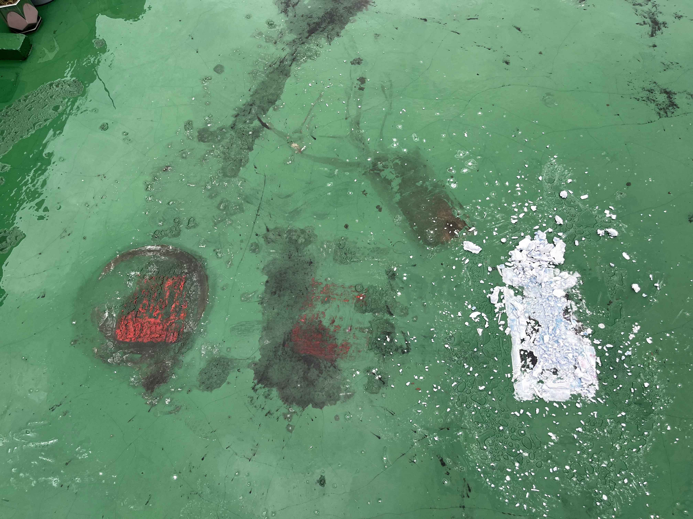 글이 탄생하지 않는 이유는 더이상의 새로움을 발견하는 데 한계가 있기 때문이다. 그것은 나의 능력의 한계, 민감함의 한계일까? 아니면 역시 무관심일까. 그것도 아니라면... 내가 느낄 수 있게 된 (끝내) ‘안정감’때문인 것일까. (지금은 글 중에서도 일지에 대한 이야기로만 한정 짓겠다.) 24.7 K 의미 없이 반복하는 작은 목소리가 자주 보일 수 있음을 최근에서야 배웠다. 음, 음, 음 그나저나 지금은 과학시간이다. 잠시 발표 전 자유시간이 주어졌고, 디벗으로 타자연습을 하는 여러 학우들 가운데에서 K는 “저는 타자 잘 못 쳐요, ...그래서 지금 하기는 조금 그래요”라고 말한다. 교실이라 그럴까? K의 표정이 한결 부드럽고 자연스럽다. 오늘 오자마자 옆에 앉아 습한 땀을 식히고 있을 때는 무엇인가 궁금한듯 힐끔힐끔 나를 쳐다보는 것이 느껴졌다. “그냥요.” 타자연습을 하지 않는 K는 교과서의 앞 내용이 기억이 안 나서 복습을 해야겠다고 말하며 수줍게 웃어보인다. 사랑스럽다... 과학실은 K에게 여전히 낯설고 불편한 공간이었던 것 같다. 교실 안에서 K는 더 자신있게 행동했고 직접 선생님에게 가까이 다가가 질문을 하기도 했다. 정확히 어떤 질문이었는지는 이해하지 못했다. K가 자신이 직접 준비한 발표자료를 미리 나에게 보여준다. 발표연습 말고, 나에게 보여주기 위함도 디벗을 가져온 이유에 포함될까? 지난 5월 국어시간에 발표했던 자료도 자랑스레 보여준다. 미소가 절로 나온다. K로부터 또다른 느낌의 친밀감을 느낀 날이다. 급식실에서 다시 본 D는 고도의 하이텐션을 보여주었다. (어째서 갑작스레 글이 나타났는가? K에게 장소의 익숙함이 필요했다면 나에게 장소의 낯설음이 필요했다) 23.7 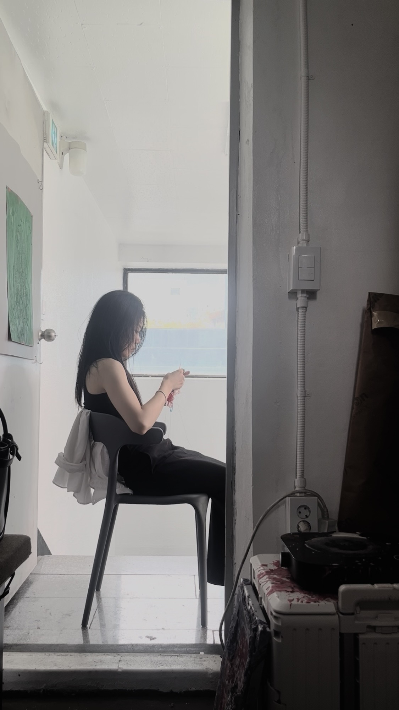 작업을 할 때면, 특히 진행이 급박해지고 마음이 차분해지면 저절로 관련된 레퍼런스들이 내 손에 들어온다. 어쩌면 ‘차분함’은 그 후에 온 것인지도 모른다. ‘무조건 항복 미술관’과 ‘다른 나라의 심장 속에서, 그 심장 속에서’가 그 자료이다. 이것들은 모두 파편, 전기(자서전)을 다루고 있고 나는 여기서 점성술사와 여자, 자기소개를 연결지었다. 왁스와 실 작업은 계속 이어가고 있다. 그것들은 점차 바닥에서 난폭하게 뜯겨져 나가는 상황에 놓아진다. 그것들은 결코 내가 의도한 바가 아니기에 점성술사의 전기인지, 사실은 점 그 자체의 전기인지 나는 알 수 없다. 미래의 전기는 픽션인가? 망상인가? 희망인가 절망인가. 점의 전기란 무엇을 의미할까. 코를 찾지 못하는 사람은 잠꼬대하는 사람 또는 다소곳이 앉아 졸고 있는 사람같다. 22.7 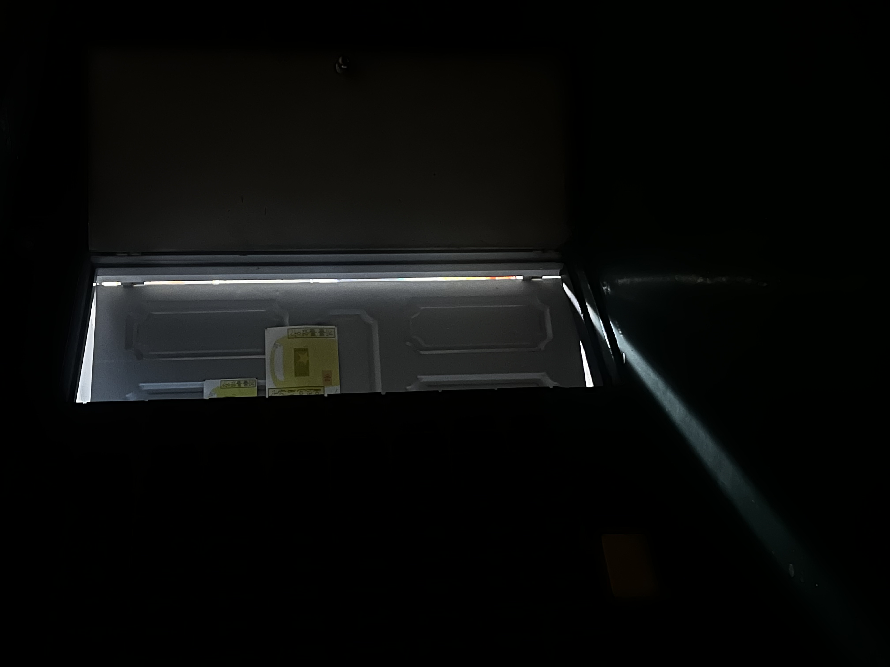 문 앞에서 안과 밖은 불필요하다. 잠시 책만 읽다 내려가 잤다. 문과 문 사이는 너무 더웠고 이미 늦은 시간이었기 때문이다. 21.7 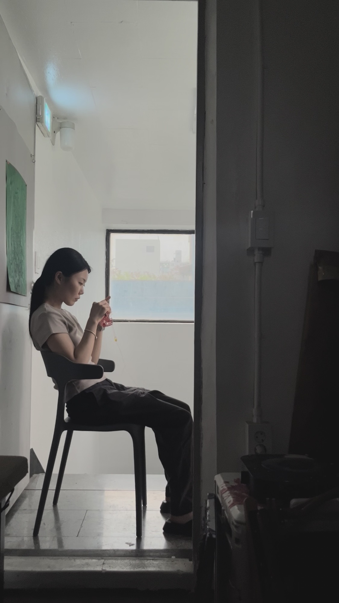 어제 늦은 오후부터(낮잠에서 깨어나고) 두통이 심했고 자려고 누웠을 때까지 극심했다. 아침에도 미약하게 남아있는 정도였다. D는 오카리나를 스스로 부르는가 싶더니 의자에 다리를 올린 채 내리지 않다가 담임선생님께서 자세를 잡아주자 그제서야 마지못해 나를 쳐다보며 자세를 바로잡는다. 스스로 하는 힘은 가장 큰 힘이다. 나는 요즘 주변에 무관심하다. 특히 일을 할 때는. 일지를 쓸 여력이 없는 것은 무관심 때문이다(정말 그런걸까?). 요즘 내가 잃어버린 낙과 새로 찾은 낙에 대해 이야기했다. 별똥별을 본 일도 이야기하는 것을 잊지 않았다. 생각이 없어진 것도 이야기했다. 그것은 좋은 것이냐는 질문을 들었다. 나는 낙을 잃어버렸다고 대답했다. 핵과 핵을 이어보려 한다. 세번째 성은 무너져 내렸다. 푸르게 무너져 내려 한편 담담히 받아들인다. 그것은 아무리 보아도 성이기 때문이다. 핵과 핵을 잇는 시도는 처음이다. 손이 가는대로 뜰 수 있다는 것은 작업이 가진 가장 큰 행운이다. 나는 행복한 인간이라고, 운이 좋은 인간이라고 입버릇처럼 말할 수 있는 근거 중 하나일 것이다. 얇고 질긴 사슬을 다시 따라가보려 한다. 20.7 잠은 충분히 잤는데도 무척이나 졸음이 밀려오고 무기력하다. 밤새 목이 부어있다. 무슨 일일까. 여름에 여행 갈 거예요 역사공부 할 거예요 가볍고 시원한 옷을 챙겨가. 19.7 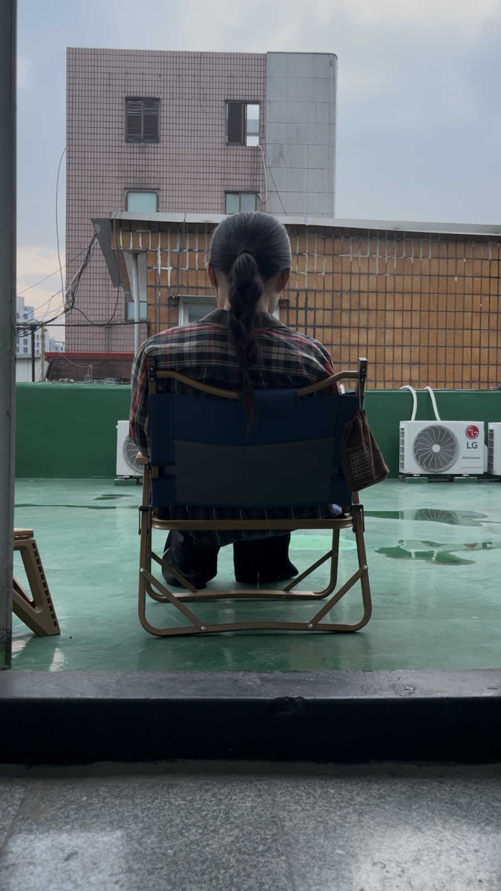 도깨비. 너도 도깨비. 생일 꼬깔콘같은 뿔을 달고 땡그란 눈으로 웃어보이는 도깨비. 너에게 도깨비 이야기를 들려주고 싶다. 하지만 우리에게 느린 이야기를 위한 시간은 없을지도 모른다. 새끼제비들이 아우성이다. 날 수 있게 되었다고. 눈길이 갈 수밖에 없는 날개 달린 것들. 재잘거리는 소리. 18.7 왁스를 녹여 바닥 그림을 전사시킬 준비를 한다. 더운 열기에 겉옷을 벗어 의자 등받이에 걸쳐두었다. 영상은 남기지 않는다. 65.2도 정도의 왁스를 38.7도 정도의 지열이 있는 바닥에 부운다. 6월의 마지막 날 밤 9시의 지열은 내가 알던 굳는 속도를 보여준다. 오랜만에 보는 보통의 장면이다. 그렇다고 다른 순간들이 잘못된 것이었다는 생각이 들지 않는다. 다음 뜨개를 빨간색 폴리에스테르 실로 뜨기 시작하다가 자러 내려갔다. 오늘은 만월이 뜨는 날이지만 구름에 가려, 또는 건물에 가려 전혀 보이지 않는다. 17.6 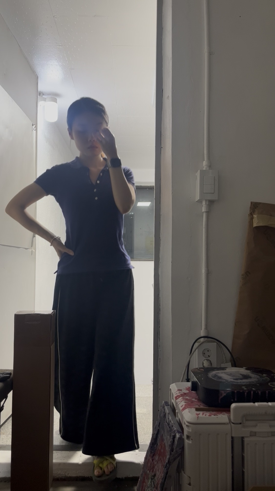 시에스타. 다시 성으로. 16.6 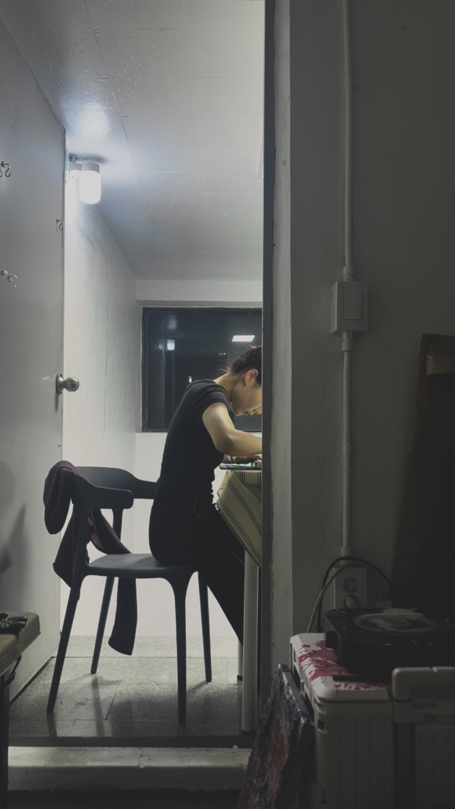 밤의 문과 문 사이는 열기를 저장하고 있다. 15.6 어제의 기록 너무 웃기구나... 일지는 의욕이 있어야 쓸 수 있다. 나의 문장력은 형편 없어졌다. 같은 날의 반복은 아닐지라도, 나는 이제 어떻게 행동해야 될지를 알고 있다. 이것이 맞을까? ...어지럽다. 14.6 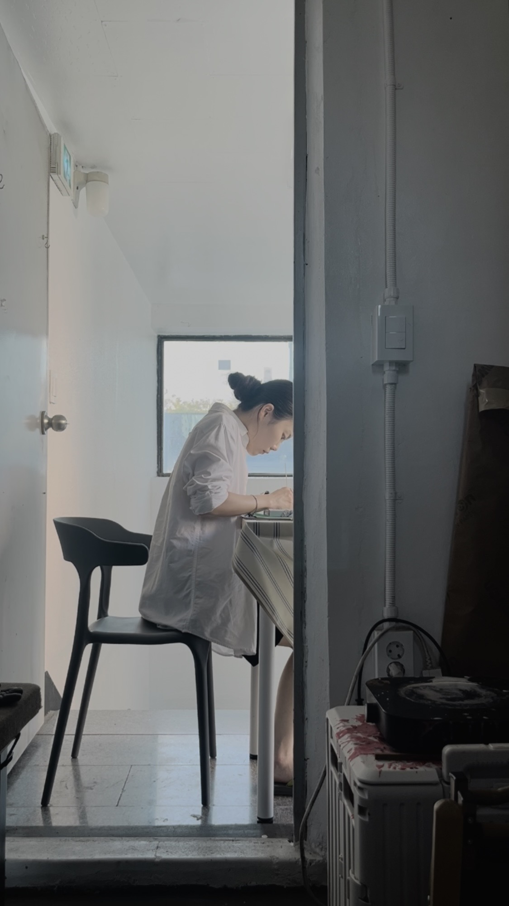 쓰는 말들에 맥락 없이 무의식 속 이야기들이 튀어나오는구나. 텃밭에 뱀이 있다? ‘둥지의 텃밭’ 약기운에 알아듣지 못할 말들이 적혀 있으니 생략. 어제 쌓아둔 레이어 위에 드로잉을 시작한다. 빛에 따라, 붉은 색지 위에, 푸른 레이어 아래에, 번진 정도에 따라 긁어진 부분은 밝게 빛나기도 하고 무겁게 가라앉기도 한다. 러브버그가 극성을 부린다. 개체 수는 많이 줄은 편이지만 통행을 방해받은 정도이다. 13.6 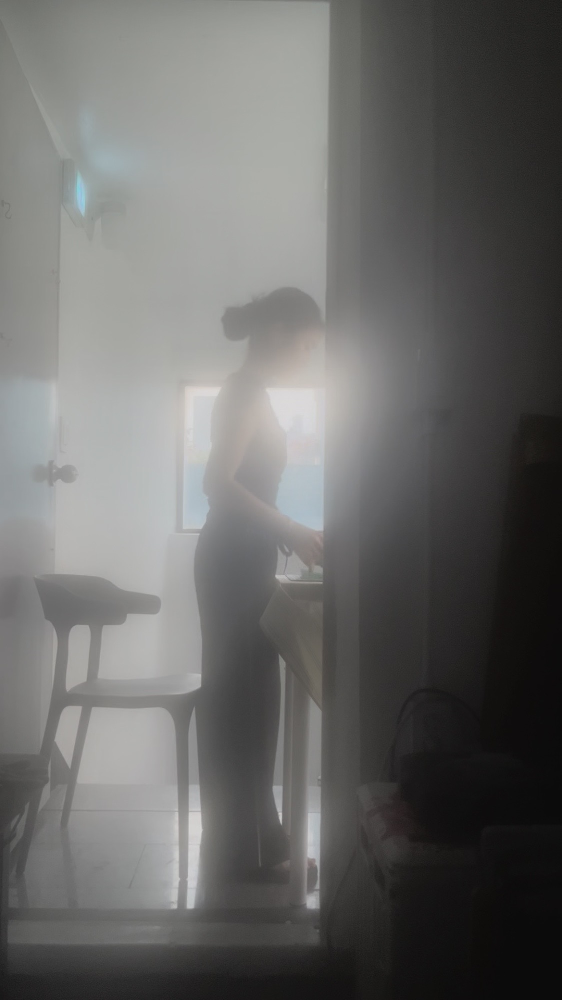 오늘은 어째서인지 할 말이 없다. 정신도 없고 신경도 날카롭다. 생리통이 드디어 시작된 것 같다. 한산 공예점에 연락함. 오랜만에 작업할 마음의 여유가 생겼다. 사실은 작업을 할 생각으로 옥상에 올라간 것은 아니었다. 알루미늄 틀에 왁스를 붓기 전 꼭 망의 미세한 짜임을 긁는 방식의 드로잉으로 기록한다. 진작에 시작했어야 한다. 붉은 색지에 실버색상을 깔고 옥상의 바닥과 유사한 색상을 끼얹는다. 다시 처음 시도하는 조합이다. 12.6 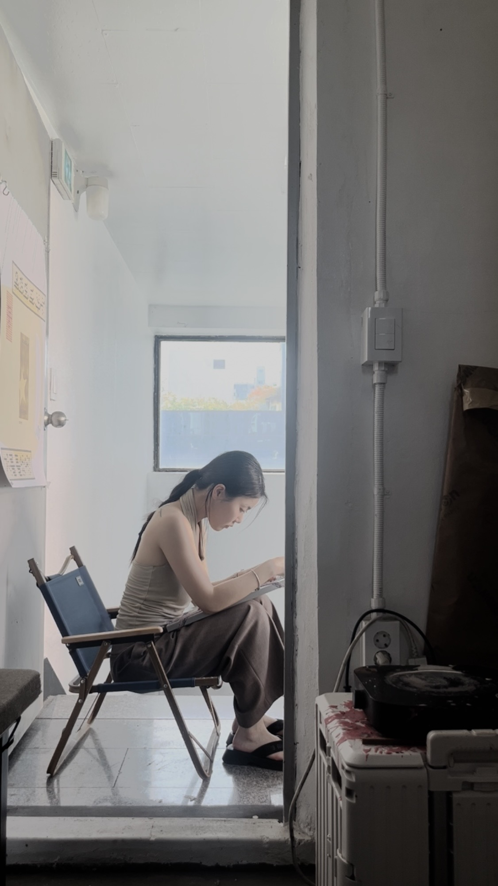 알루미늄 틀의 빈 부분까지 모두 마무리한다. 30도의 여름 기온에 한껏 달아오른 옥상바닥의 열기가 더해져 절로 땀이 새어나와 흐른다. 영상을 찍으며 생각보다 알게 된 것이 몇 개 있다. 틀이 얇은 실로 덮여갈수록 팽팽한 소음이 생성된다는 것(나는 전혀 알지 못했다). 그리고 이 옥상의 계단실이 시각적으로 신비롭고 매력적일 수 있다는 사실이다. 의자에서는 대략 20분 마다 일어나는 것이 몸 상태와 집중력에 이롭다는 것과, 옥외로의 문을 활짝 열어둔 이 계단실은 날씨에 따라 다른 색감과 분위기를 가진다는 것. 11.6 용산 9:14 -> 서천 12:18 서천 14:52 -> 용산 17:51 이날 이동시간 6시간, 용무시간 1시간 반이었다. 급식실을 가고, 급식실에서 돌아오는 길에서마다 운동장의 흙바닥을 가로지르는 D를 오늘도 목청껏 불렀다. 목은 이미 나갔다. 흙바닥 바로 앞 경계에 나는 쭈그려 앉아 D에게 손짓한다. 떄로는 ‘목소리’보다 ‘손짓’이 더 강력하다. 나는 흙바닥을 손으로 쓰다듬고 손가락끝으로 긁어모아 한 손에 모래들을 집어들었다. 사르르-... 그리고 그것들을 조용히 바닥으로 떨어트렸다. 이것이 ‘가루’임을, 실내화 바닥에 묻으면 교실, 복도, 화장실 바닥을 더럽힐 수 있음을 설명하기 위해 순간적으로 선택한 방식이다. D도 나를 따라 그 작은 손으로 모래를 만져본다. 감정을 잘 다스려줘야 한다. 이 아이의... 손바닥으로 넓게 쓸고 다진 흙바닥에 “D야, 이해했지? 자, 선생님이 마지막으로 편지 써줄게.”라고 말하며 ‘ D♥︎’라 적는다. 쭈그려 앉은 내 옆에 쭈그려 앉은 D는 곧바로 작은 미소와 함께 자신도 똑같이 써 본다. 자신의 이름과 물만두처럼 귀여운 하트를. 10.6 춥고 배고프다. 일주일 째 매일 같이 감정표를 작성하고 있다. 옥상창조. 바닥에 눕기 벽에 서기. 9.6 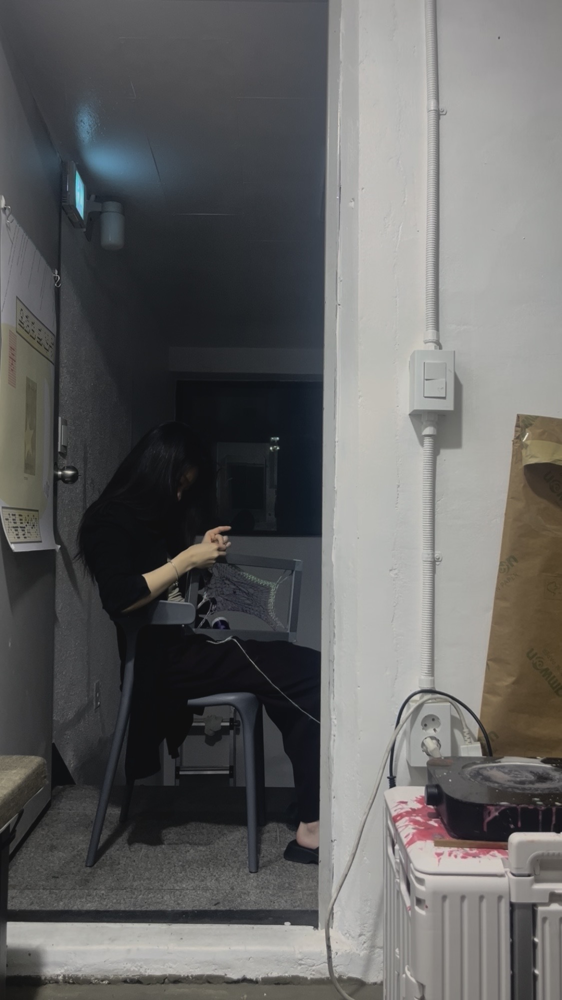 월요일 쉼. 밤 9시부터 작업을 했다. 밤은 쌀쌀한듯 더웠다. 긴 검은 가디건을 입고 있었기 때문일 수도. 어째서인지 날벌레나 모기의 기척은 전혀 느껴지지 않았다. 폴리에스테르 실보다 조금 더 두께가 있는 실 외곽으로 다시 보라색 폴리에스테르 실로 짜나가기 시작한다. 알루미늄 틀을 돌리고, 돌리고, 또 돌린다. 숙인 고개가 아파 대신에 신발을 벗고 다리를 몸쪽으로 끌어당겨 테이블을 만든다. 앞으로 하루나 이틀을 할애하면 하나의 틀이 준비된다. 그때는 붉은 성을 바닥에 그리고 왁스를 붓거나 다시 또 하나의 틀을 만들 것이다. 화요일. 선생님 두 분께서 몸은 괜찮냐고 걱정해주신다. 더위 때문에 입맛이 없는 것으로 결론이 난다. D는 컨디션이 아주 좋고, 교과서를 스스로 꺼내어 심지어는 스스로 쪽수를 찾아 펼친다(!) 놀라워라... 애정표현이 과하다, “사랑해요” “선생님, 사랑해요” 5번 정도 말하고 볼에 뽀뽀를 하거나 껴안거나 의자 채로 가져와 나의 무릎에 머리를 기대는 등... 행동을 한다. 월요일에 내가 오지 않았던 것이 너무 큰 의미는 아니었기를 바랄 뿐이다. 8.6 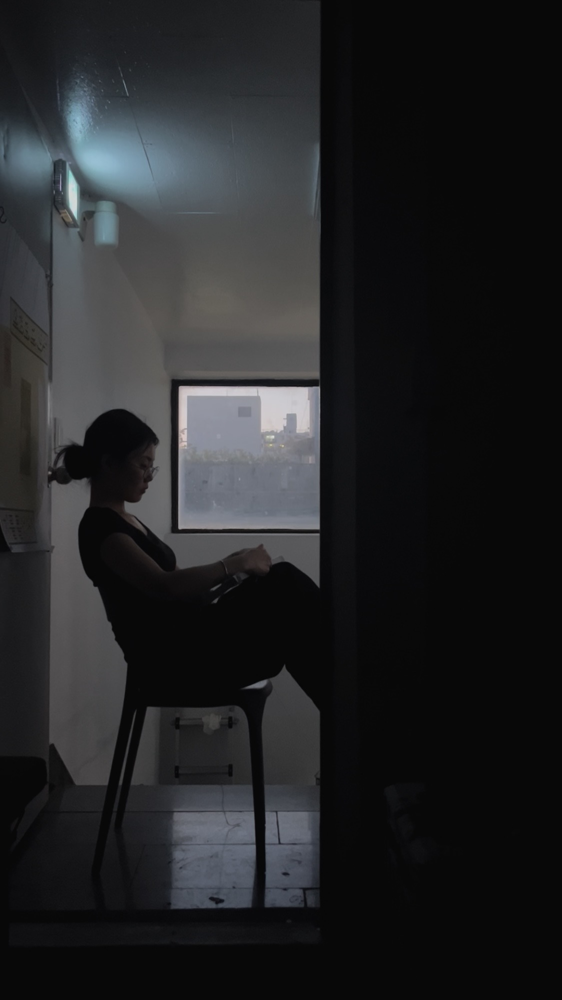 왁스 부을 틀이 바닥 난 저녁에 문 앞에서 뜨개를 한다. 어제 밤 Q와 크게 싸웠다. 나는 끝내 욕과 함께 식탁을 주먹으로 내리치며 울음을 터트렸다. 그덕에... 나의 감정표는 하루가 끝나기 전 진흙탕이 되었다. 계속 불안하고 긴장에 몸이 경직된다. 어제의 장면이 계속 반복된다. 충격적이었다. 약을 먹은 지 며칠 안 되기도 했지만 식욕은 돌아오지 않았다. 배고픔을 극심하게 느끼면서 입맛은 없다니, 말이 되지 않는다. 7.6 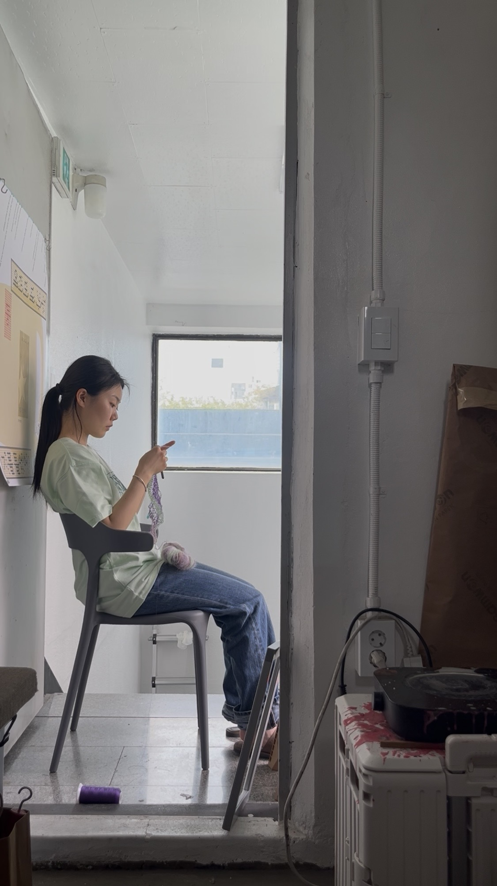 아주 잠시 뜨개를 하고 내려감. 6.6 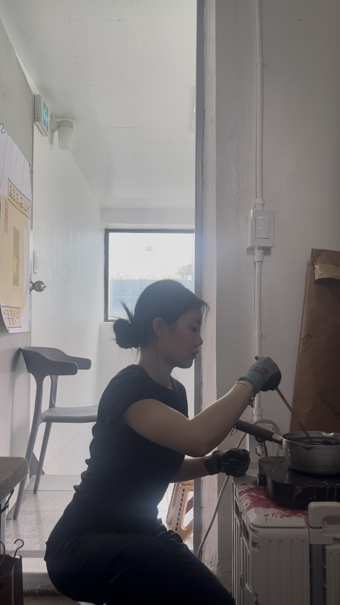 왁스를 녹인다. 왁스는 굳지 않을 것이다. 갈라지고 우글거릴 것이다. 무르게 짓이겨져 떨어져 나갈 것이다. 붉은 성은 박살날 것이다. 항상 (매일같이) 오는 급식실에 앉아, 평소와 같이 책을 읽거나 차를 마시며, 시간이 되면 D에게 “몇시야?”라고 물어본다. 그러다 문득 앞의 풍경과 대기를 읽었고 그 독해가 내 안으로 순간 스며들었을 때, 내가 무언가를 잊었다는 것을 깨달았다. 회복되고 있다는 신호일까? 이것은 나의 기대인가, 사회적 기대인가? 나는 회복되고 싶은가, 그렇지 않은가? 5.6 많이 사람이 “나로 살 것”을 강조한다(사실은 소수의 사람의 말이다). 나는 한 달에 5일 정도를 “나로 살고” 그런 나에 대해 떳떳하다. 어쩌면 그보다 더 적을지도 모른다. 배가 고파 어지럽다. 식욕은 여전히 없지만 배가 많이 고프니 이따 뭐라도 입에 들어갈 것 같다. 코딩을 하고, 책을 만들자. 4.6 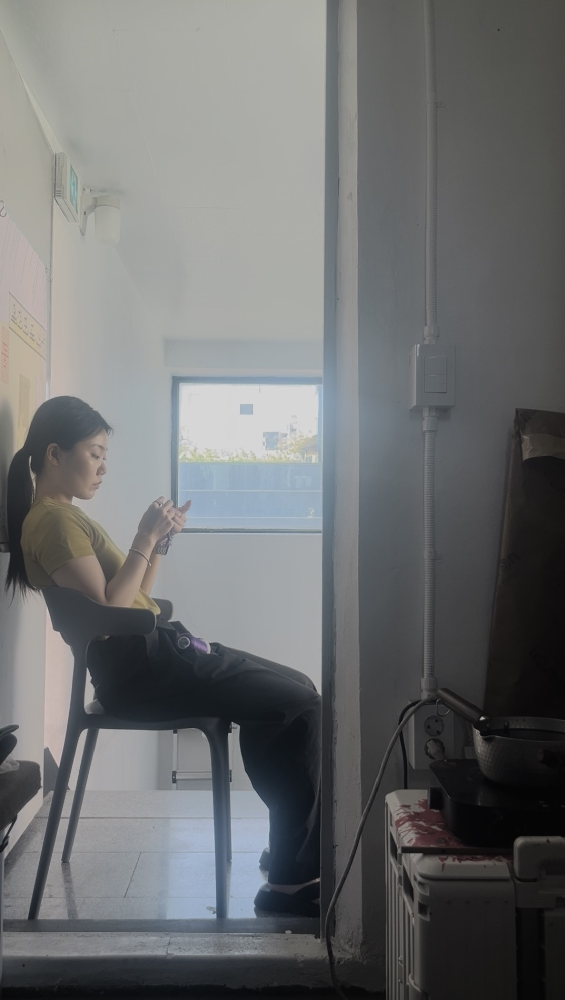 날은 흐리지만 해가 뜨거운 날이다. 옥상의 바닥은 열에 달구어졌고 오일파스텔은 닿는대로 녹진하게 녹아버린다. 그렇게 그림은 그런대로 그려진다. 그러나 소이왁스는 바닥의 열로 인해 평소보다 굳혀지지 않고, 원래대로라면 일정 시간이 지나 알루미늄 틀과 바닥 사이의 미세한 틈에 맞춰 왁스가 굳혀지며 더이상 새어나가지 않도록 역할을 해야하지만 지열로 인해 왁스는 액체상태 그대로 사방으로 퍼져나간다. 잠시 왁스 붓기를 중단한다. 남는 시간엔 의자로 돌아와 뜨개를 한다. 왁스의 상태는 액체와 고체로 나눌 수 없다. 이것을 ‘상태’로 설명한다면 당연한 말처럼 들린다. 정확히 문제는 ‘시간의 지연’으로 넘어간다. 동절기 빠르게 굳혀졌던 왁스가 매끈하고 고른 표면을 가졌던 것에 반해, 하절기 뜨거운 지열 위에서(그마저 식은 밤시간이라 하여도) 왁스는 우글거리고 들썩거리고 균열을 일으키고 최대한으로 굳어지지 않고 무른 상태를 유지한다. 뼈도 없고 장식도 없는 물을 가르는 비늘갑옷. 맹목적인 보호. 3.5 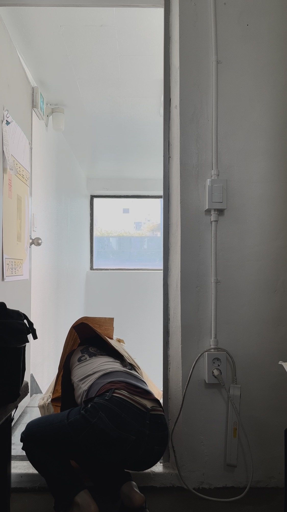 어제, 비가 많이 와 불안한 내면을 더 흔들리지 않게 해준 저녁. 편안한 시간을 보냈다. Q에게는 상황이야기를 공부하며 흥미롭게 읽은 구절을 낭독해주었고, X에게는 한 고기능자폐를 가진 아이와의 귀엽고 작은 에피소드에 대해 이야기했다. 월요일 한 시간만 만나는 K에 대한 이야기였다. “선생님, 잘 지내요.” K가 나에게 먼저 해준 말이었다. 고맙고 기특했다. 놀라움도 가득했다. 방금 D가 사인펜 뚜껑으로 자극추구행동을 하다가 부정확한 발음으로 “누가 내 머리에 똥 쌌어”라고 말한 것 같다. 재작년의 작업을 옷장 위 상자에서 다시 꺼내었다. 형태 별로 분류된 전개도들이 너비가 얇은 종이로 최소한의 관절마다 가지런히 묶여져 있다. 마치 바로 꺼내어 보지는 않겠다는 의지로 보이는 이 하얀 묶음들이, 그렇다면 지금이 그 꺼낼 시기인 것일까, 한 번은 더 물어보게 하는 그런 묶음으로. 2.5 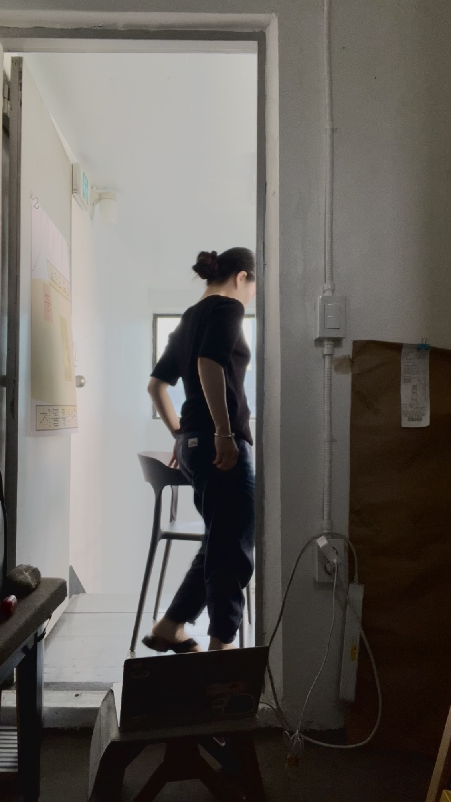 그러고보니 오늘은 스승의 날이다. D에게 생각지도 못 한 꽃다발 편지를 받았다. 감동이었다. 하늘 맑음. 옥상의 탕비실과 옥상 밖으로 나가는 문 사이의 공간(이곳을 복도라고 부를 수는 없을 것 같다)에서 작업을 했다. 그 전에는 얼마 동안 옥상 밖 외벽에 작업대를 바짝 붙여 벽을 바라보며 작업을 했다. 작업대 위 많은 것들이 바람에 들썩이곤 했다. 자연광과 쉼 없이 불어대는 바람에 눈은 쉽게 건조해지고 피로해졌다. 그러나 때때로 깊은 집중도 가능했다. 알루미늄 프레임에 왁스를 부어 굳히는 작업을 하기 전 두 가지 명도의 레이어가 쌓인(마지막은 블랙 아니면 비교적 낮은 명도의 색상) 4절 색지에 긁어 드로잉을 한다. 코바늘을 이용해 뜨개를 했던 긴 시간을 반복한다. 시간은 훨씬 단축되어 있다. 1mm가 될까 싶은 가느다란 폴리에스테르 실이 꼬아진 모양들을 하나하나 따라 긁는다. 검은 표면 아래의 속살이 드러난다. 자작나무 꼬챙이 끝에 걸려있는 검은 살점을 걸레에 닦는다. 걸레에는 검은 점들이 두드러기처럼 피어나 있다. 어디선가 새 소리가 들려온다. 소란스럽다. 위급하기도 하다. 아마도 제비일 것이다. 제비는 언제나 위급하고 격정적인 목소리와 움직임으로 날아다니니까. 1.5 |